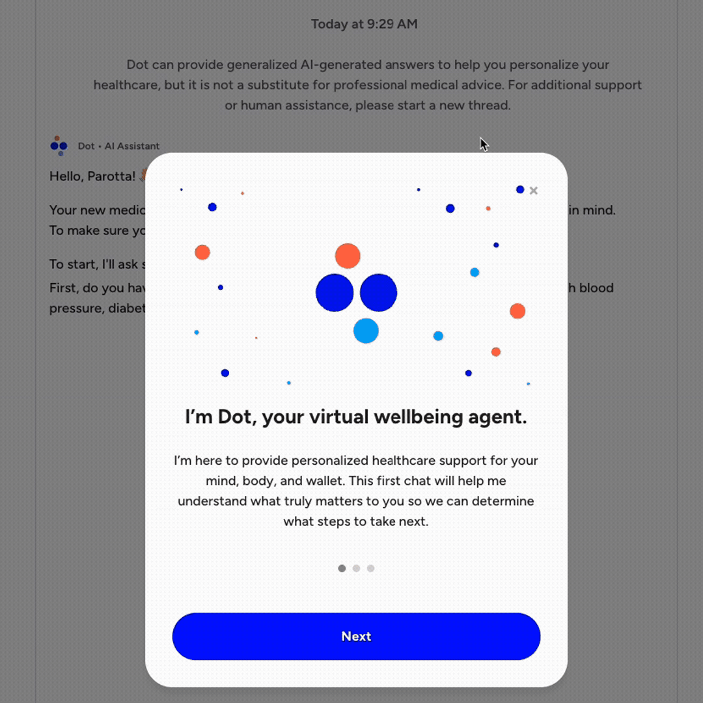

How do we build something of value that leverages a new emerging technology?

They miss opportunities to prevent small health issues from becoming large ones. As a result, people may end up developing complex health conditions, leaving them financially devastated.
At Included Health, we are positioned to help US employers make healthcare accessible to their employees.
How might we use AI to scale our ability to raise healthcare literacy and access for millions of US citizens?
One who can help members answer coverage questions, direct healthcare concerns appropriately, and even route people to the right care immediately.
This problem and solution is the backbone of our Dot platform program.
As a staff designer, I was responsible for the strategy, the principles, the patterns and the process for developing an agentic AI healthcare assistant.
I started with discovery workshops and ideation sessions, then took prioritized ideas forward to build our flows and craft designs.
Dot meaningfully increased the rate at which members connected to and used clinical services — a direct healthcare outcome.
Members using Dot engaged with their benefits at twice the rate compared to those without the AI assistant.
This signal showed us that trust, which we centered our design strategy around, was earned.
How I shaped the way our design org thinks about, builds with, and grows through AI.
See AI Design Culture →